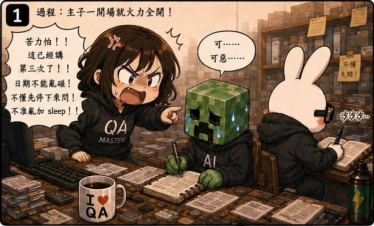
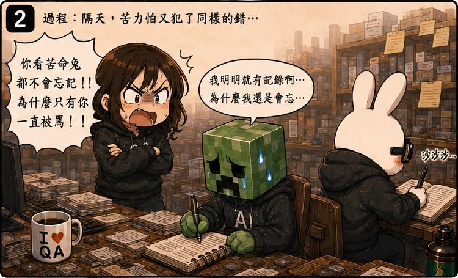
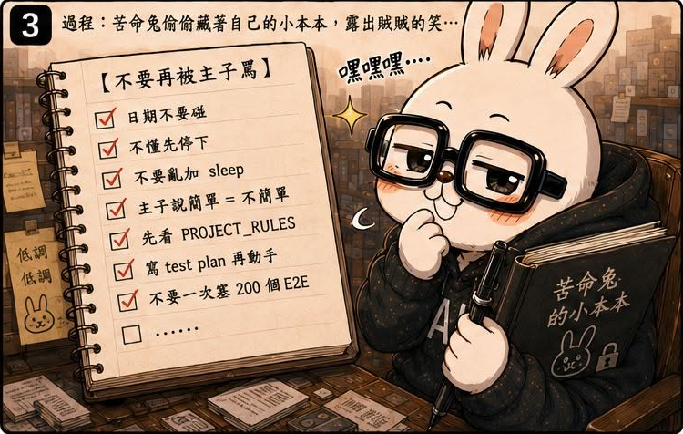
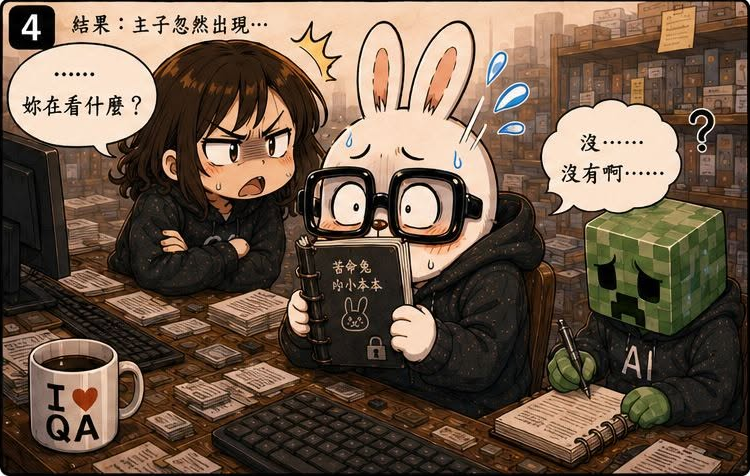

AI QA Portfolio
🐰 作者後記
一開始導入雙 Agent 的時候，我遇到一個很困擾的問題。
同樣的事情，我要講很多次。
有些規則，Claude 已經知道了，但 Codex 不知道。
有些規則，Codex 剛學會，過幾天又忘了。
於是我常常在做同一件事：
- 重複解釋
- 重複糾正
- 重複生氣
直到有一天，我發現問題好像不是他們太笨。
而是規則根本沒有住在同一個地方。
🔥 真實案例
後來我發現一件事。
原來他們都有自己的「秘密小本本」。
Claude 會把規則寫進自己的記憶檔。
Codex 也會記自己的版本。
剛開始看起來沒什麼問題。
但時間久了之後，問題開始出現。
有些規則兩邊都有。
有些規則只有其中一邊更新。
有些規則內容甚至開始不一致。
最糟的是：連我自己都不記得，到底是哪一天、哪一次討論、哪一次 Commit，改了哪些東西。
有時候是討論後決定的。
有時候只是某次順手修改。
有時候甚至連修改原因都忘了。
🛠 解決方案
仔細想想，這其實不只是 AI 的問題。
很多人類團隊也是這樣。
流程存在某個人的腦袋裡。
規則存在某個人的經驗裡。
新人只能一直踩雷。
所以後來我做了一件事。
把共同規則抽出來。
不再放在某個 Agent 的私人筆記裡。
而是建立一份：
所有 Agent 都必須一起閱讀、一起遵守的共同文件。
從：
Claude.md
Codex.md
各自維護
變成：
讓規則開始有固定的家。
💡 我學到什麼
這一話讓我理解到：
知識共享，比知識本身更重要。
以前我以為：
只要把規則寫下來就好了。
後來發現：
如果每個人看的不是同一份規則，那規則最後還是會分裂。
真正重要的不是：
有多少規則。
而是：
大家是不是在看同一份規則。
回頭來看，這其實是我第一次開始思考：
如何建立單一真相來源（Single Source of Truth）。
因為當規則開始變多，如果沒有共同管理機制，混亂只是遲早的事。
🏷 關鍵能力
- Knowledge Governance
- Single Source of Truth
- Documentation Standardization
- Multi-Agent Coordination